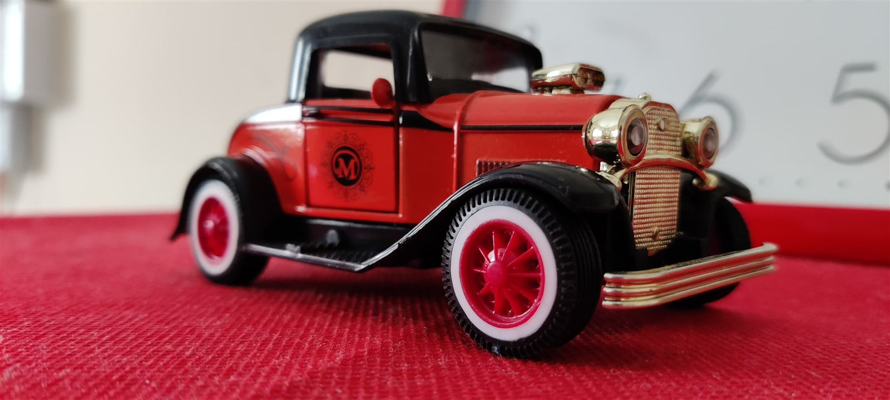
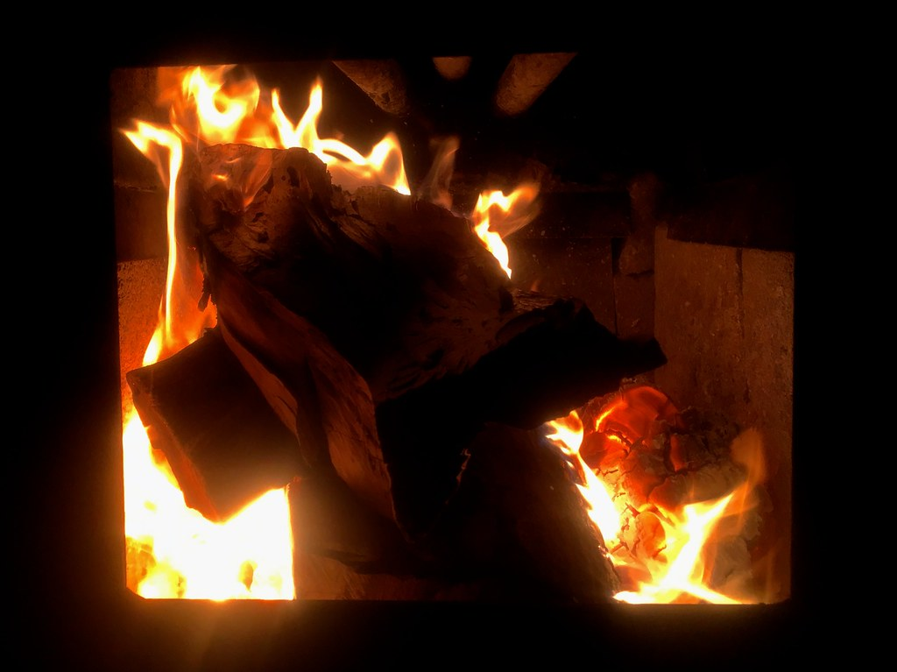

オーナーさんの趣味で洋楽、邦楽のLPレコード、クルマの模型や懐かしいオモチャ等が飾りつけてあり、レコードもプレーヤーでかけてくれる。リクエストにも応じてくれて、懐かしい場所に帰って来たような不思議な感覚だった。インスタで見つけて来店されたお客様
Concept
オーナーの趣味が詰まった、
もうひとつの部屋
アナログCafeの店内には、オーナーが長年集めてきた洋楽・邦楽のLPレコード、クルマのミニチュア、懐かしいおもちゃが静かに並んでいます。 初めて訪れたお客様が「懐かしい場所に帰ってきたような不思議な感覚だった」と話してくれたように、ここは誰かの記憶の部屋に迷い込んだような、不思議な居心地の良さがある場所です。 派手な演出はありません。ただ、好きなものを好きなように飾り、好きな音楽を好きな人と聴く。その積み重ねが、この店の空気をつくっています。

LPレコードとミニチュアカー、懐かしいおもちゃたち
店内の壁や棚には、洋楽・邦楽のLPレコードがずらりと並び、クルマのミニチュアや懐かしいおもちゃがそこここに飾られています。音楽好きの方はレコードの背表紙に、車好きの方はミニチュアカーのコレクションに、つい目を奪われるかもしれません。「ミニチュアカーが飾られていて、車好きの方にも喜ばれそう」という声をいただいたこともあり、音楽だけでなく、懐かしいものが好きな方にも楽しんでいただける空間です。
イメージ画像です（Openverse / CC0・PDM素材使用、実店舗の写真ではありません）
壁を彩るLPレコードの数々
びっしりと並んだLPレコードは、この店の背景そのもの。手に取る一枚一枚に、オーナーの音楽への愛着が感じられます。
イメージ画像です（Openverse / CC0・PDM素材使用、実店舗の写真ではありません）

薪ストーブが灯る、長居したくなる時間
寒い季節、店内では薪ストーブが静かに燃えています。パチパチという音と、じんわりと伝わる暖かさに、つい長居してしまうお客様も少なくありません。「店内の薪ストーブで、いつまでも居たくなるような雰囲気でした」という声の通り、音楽と暖かさに包まれて、肩の力を抜いてお過ごしいただける時間です。
イメージ画像です（Openverse / CC0・PDM素材使用、実店舗の写真ではありません）
※写真ではなくイメージ図です
音楽談議・オーディオ談議が楽しめる店主
アナログCafeの店主は、自らの趣味を店の中に惜しみなく詰め込んできた人です。お客様からリクエストがあれば一枚のレコードをかけ、オーディオの話になれば機材のことを熱心に語り、忙しい時間であっても足を止めて懐かしい話に付き合ってくれる。そんなフレンドリーな人柄が、この店に通うお客様の声からも伝わってきます。
Voice
お客様の声
忙しい時にお邪魔したのに懐かしい話しに付き合ってくれて感謝です。マスターの人柄の良さが、訪れているお客さんで分かります。常連のお客様